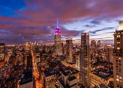
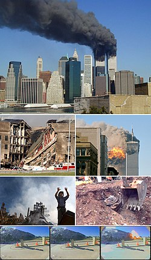

New York, often called New York City[b] or simply NYC, is the most populous city in the United States, located at the southern tip of New York State on one of the world's largest natural harbors. The city comprises five boroughs, each of which is coextensive with a respective county. New York is a global center of finance[10] and commerce, culture and technology,[11] entertainment and media, academics and scientific output,[12] and the arts and fashion, and, as home to the headquarters of the United Nations, is an important center for international diplomacy. New York City is the center of the world's principal metropolitan economy.
New York City traces its origins to Fort Amsterdam and a trading post founded on the southern tip of Manhattan Island by Dutch colonists in approximately 1624. The settlement was named New Amsterdam (Dutch: Nieuw Amsterdam) in 1626 and was chartered as a city in 1653. The city came under English control in 1664 and was temporarily renamed New York after King Charles II granted the lands to his brother, the Duke of York.[24] before being permanently renamed New York in November 1674. New York City was the capital of the United States from 1785 until 1790.[25] The modern city was formed by the 1898 consolidation of its five boroughs: Manhattan, Brooklyn, Queens, The Bronx, and Staten Island, and has been the largest U.S. city ever since.
.jpg)
Wall Street is a street in the Financial District of Lower Manhattan in New York City. Eight city blocks long, it runs between Broadway in the west and South Street and the East River in the east. The term "Wall Street" has become a metonym for the financial markets of the United States as a whole, the American financial services industry, New York–based financial interests, or the Financial District itself. Anchored by Wall Street, New York has been described as the world's principal fintech and financial center
The September 11 attacks, commonly known as 9/11,[e] were four coordinated Islamist suicide terrorist attacks carried out by Al-Qaeda against the United States on September 11, 2001. That morning, 19 terrorists hijacked four commercial airliners scheduled to travel from the East Coast to California. The hijackers crashed the first two planes into the Twin Towers of the World Trade Center in New York City, two of the world's five tallest buildings at the time, and aimed the next two flights toward targets in or near Washington, D.C., in an attack on the nation's capital. The third team succeeded in striking the Pentagon, the headquarters of the U.S. Department of Defense in Arlington County, Virginia, while the fourth plane crashed in rural Pennsylvania during a passenger revolt. The September 11 attacks killed 2,977 people, making them the deadliest terrorist attack in history, and instigated the multi-decade global war on terror, fought in Afghanistan, Iraq, and elsewhere.
The first impact was that of American Airlines Flight 11, which ringleader Mohamed Atta flew into the North Tower of the World Trade Center complex in Lower Manhattan at 8:46 a.m.[f] Seventeen minutes later, at 9:03,[g] the World Trade Center's South Tower was hit by United Airlines Flight 175. Both 110-story skyscrapers collapsed within an hour and forty-one minutes,[h] bringing about the destruction of the remaining five structures in the WTC complex and damaging or destroying nearby buildings. A third flight, American Airlines Flight 77, crashed into the Pentagon at 9:37 a.m., causing a partial collapse. The fourth and final flight, United Airlines Flight 93, flew in the direction of the capital. Alerted to the previous attacks, the passengers fought for control, forcing the hijackers to nosedive the plane into a Stonycreek Township field, near Shanksville, at 10:03 a.m. Investigators determined that Flight 93's target was either the United States Capitol or the White House.
Excluding the hijackers, the attacks killed 2,977 people, injured thousands more and gave rise to substantial long-term health consequences while also causing at least $10 billion in infrastructure and property damage. It remains the deadliest terrorist attack in history as well as the deadliest incident for firefighters and law enforcement personnel in US history, killing 343 and 72 members, respectively. The loss of life stemming from the impact of Flight 11 secured its place as the most lethal plane crash in aviation history followed by the death toll incurred by Flight 175. The destruction of the World Trade Center and its environs seriously harmed the U.S. economy and induced global market shocks. Many other countries strengthened anti-terrorism legislation and expanded their powers of law enforcement and intelligence agencies. Cleanup of the World Trade Center site (colloquially "Ground Zero") took eight months and was completed in May 2002, while the Pentagon was repaired within a year. After delays in the design of a replacement complex, construction of the One World Trade Center began in November 2006; it opened in November 2014. Memorials to the attacks include the National September 11 Memorial & Museum in New York City, The Pentagon Memorial in Arlington County, Virginia, and the Flight 93 National Memorial at the Pennsylvania crash site.